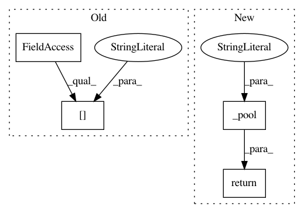

267d7e81977f23998078f39afd48e9a97c3acf5a,scripts/tf_cnn_benchmarks/convnet_builder.py,ConvNetBuilder,apool,#ConvNetBuilder#Any#Any#Any#Any#Any#Any#Any#,182
Before Change
else:
self.top_size = num_channels_in
name = "apool" + str(self.counts["apool"])
self.counts["apool"] += 1
pool = pooling_layers.average_pooling2d(
input_layer, [k_height, k_width], [d_height, d_width],
padding=mode,
After Change
input_layer=None,
num_channels_in=None):
Construct an average pooling layer.
return self._pool("apool", pooling_layers.average_pooling2d, k_height,
k_width, d_height, d_width, mode, input_layer,
num_channels_in)
def reshape(self, shape, input_layer=None):
if input_layer is None:
input_layer = self.top_layer
In pattern: SUPERPATTERN
Frequency: 4
Non-data size: 4
Instances
Project Name: tensorflow/benchmarks
Commit Name: 267d7e81977f23998078f39afd48e9a97c3acf5a
Time: 2017-10-05
Author: tobyboyd@google.com
File Name: scripts/tf_cnn_benchmarks/convnet_builder.py
Class Name: ConvNetBuilder
Method Name: apool
Project Name: onnx/onnx-tensorflow
Commit Name: c72e29f1d799bde43efe0df9485ba62519e9b09c
Time: 2017-10-27
Author: acjacob@dccxl001.pok.ibm.com
File Name: onnx_tf/backend.py
Class Name: TensorflowBackend
Method Name: handle_average_pool
Project Name: tensorflow/benchmarks
Commit Name: 267d7e81977f23998078f39afd48e9a97c3acf5a
Time: 2017-10-05
Author: tobyboyd@google.com
File Name: scripts/tf_cnn_benchmarks/convnet_builder.py
Class Name: ConvNetBuilder
Method Name: mpool
Project Name: onnx/onnx-tensorflow
Commit Name: 76623579f3259ebefb710a9b013b055f4a7864d1
Time: 2017-10-27
Author: acjacob@dccxl001.pok.ibm.com
File Name: onnx_tf/backend.py
Class Name: TensorflowBackend
Method Name: handle_average_pool